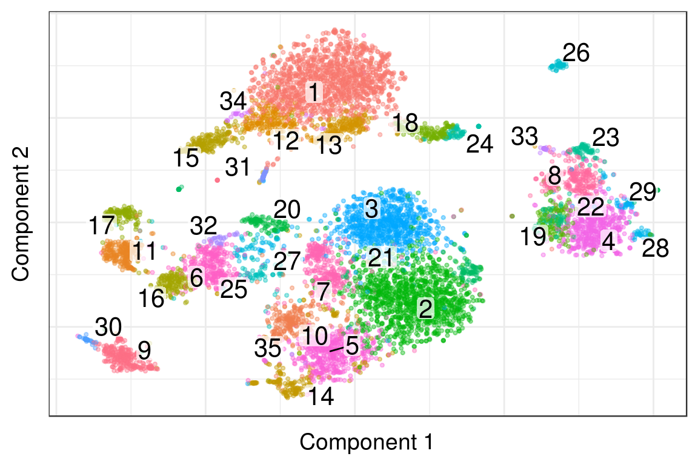
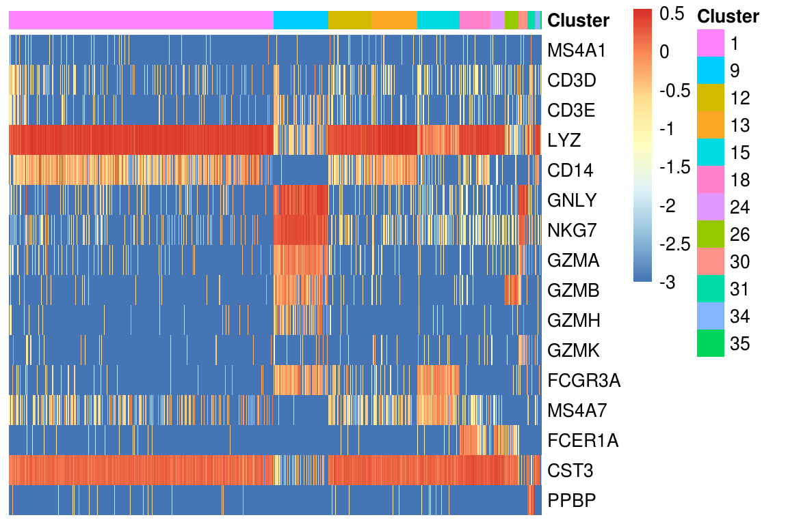
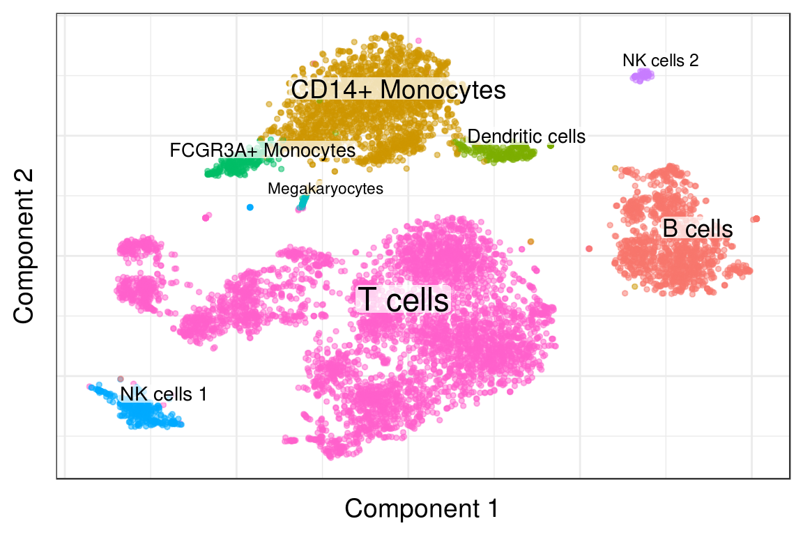
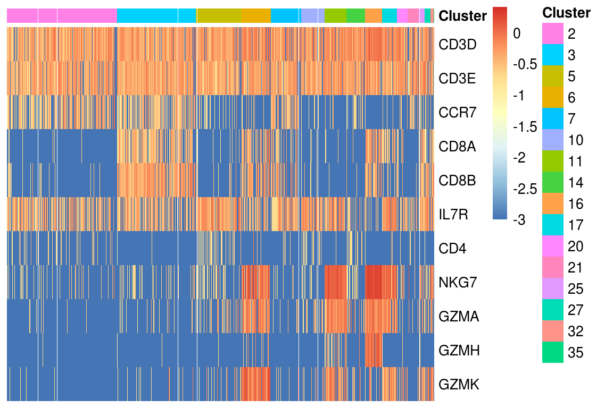
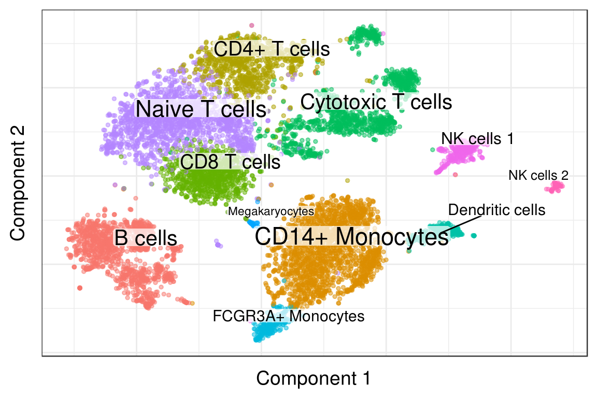

Annotation of 10x 8k PBMCs from a Healthy Donor dataset
Viktor Petukhov
2018-01-24
Source file: notebooks/annotation/annotation_pbmc8k.Rmd
Last updated: 2018-01-24
Code version: 0f07cfa
Read data
holder <- readRDS(paste0(kEstFolder, 'pbmc8k_no_umi.rds'))
genes <- read.table(paste0(k10xFolder, 'genes.tsv')) %>%
filter(V2 %in% names(which(table(V2) == 1)))
gene_id_to_names <- setNames(genes$V2, genes$V1)
holder$cm_raw <- holder$cm_raw[grep("^[^;]+$", rownames(holder$cm_raw)),]umis_per_cell <- sort(Matrix::colSums(holder$cm_raw), decreasing=T)
est_cell_num <- EstimateCellsNumber(umis_per_cell)scores <- ScorePipelineCells(holder, mit.chromosome.name='MT',
predict.all=T)[names(umis_per_cell)]
PlotCellScores(scores, cells.number=est_cell_num)
Pagoda run:
real_cbs <- names(scores)[1:est_cell_num$expected]
real_cbs <- real_cbs[scores[real_cbs] > 0.9]
r_cm <- holder$cm_raw[, real_cbs]
r_cm <- r_cm[intersect(rownames(r_cm), names(gene_id_to_names)), ]
rownames(r_cm) <- gene_id_to_names[rownames(r_cm)]
pgd <- GetPagoda(r_cm, n.cores=30)8451 cells, 12931 genes; normalizing ... using plain model winsorizing ... done.
calculating variance fit ... using gam 594 overdispersed genes ... 594 persisting ... done.
calculating distance ... pearson ... done
running tSNE using 30 cores:# clusters <- pgd$clusters$PCA$infomap
# write.csv(clusters, paste0(kAnnotationData, 'pbmc8k_clusters.csv'))
# Pagoda uses stochastic clustering algorithm, so we saved clusters from one run
clusters <- read.csv(paste0(kAnnotationData, 'pbmc8k_clusters.csv'), row.names=1)
clusters <- setNames(clusters$x, rownames(clusters))
log_mtx <- log10(1e-3 + as.matrix(pgd$counts[names(clusters), ]))Initial clustering:
PlotPagodaEmbeding(pgd, clusters=clusters, show.ticks=F)
Initial labeling
de_genes <- pgd$getDifferentialGenes(type='PCA', groups=clusters,
upregulated.only=T) %>% lapply(rownames)
major_cell_types <- lst(
`T cells` = sapply(de_genes, function(genes) 'CD3D' %in% genes) %>%
which() %>% names() %>% as.integer(),
`B cells` = sapply(de_genes, function(genes) 'MS4A1' %in% genes) %>%
which() %>% names() %>% as.integer()
)
major_type_clusts <- major_cell_types %>% unlist()
if (length(major_type_clusts) != length(unique(major_type_clusts)))
stop("Something goes wrong")heatmap_genes <- c(
'MS4A1',
'CD3D', 'CD3E',
'LYZ', 'CD14',
'GNLY', 'NKG7',
"GZMA", "GZMB", "GZMH", "GZMK",
'FCGR3A', 'MS4A7',
'FCER1A', 'CST3',
'PPBP')
heatmap_clusters <- clusters[!(clusters %in% unlist(major_cell_types))]
# heatmap_clusters <- heatmap_clusters[heatmap_clusters > 20]
PlotExpressionHeatmap(log_mtx, heatmap_clusters, heatmap_genes)
type_ids <- c(major_cell_types, lst(
`CD14+ Monocytes` = c(1, 12, 13, 34),
`NK cells 1` = c(9, 29, 30),
`NK cells 2` = 26,
`FCGR3A+ Monocytes` = 15,
`Dendritic cells` = c(18, 24),
`Megakaryocytes` = 31
))
type_ids$`T cells` <- c(type_ids$`T cells`, 35)
markers_df <- data.frame(
Type = c(
"B cells", "T cells", "CD14+ Monocytes", "NK cells 1", "NK cells 2",
"FCGR3A+ Monocytes", "Dendritic cells", "Megakaryocytes"),
Markers = c(
"MS4A1", "CD3D, CD3E", "LYZ, CD14", "GNLY, NKG7", "GZMB, NKG7",
"FCGR3A, MS4A7", "FCER1A, CST3", "PPBP")
)
markers_df$Clusters <- sapply(type_ids, paste, collapse=", ")[as.character(markers_df$Type)]
markers_df| Type | Markers | Clusters |
|---|---|---|
| B cells | MS4A1 | 4, 8, 19, 22, 23, 28, 29, 33 |
| T cells | CD3D, CD3E | 2, 3, 5, 6, 7, 10, 11, 14, 16, 17, 20, 21, 25, 27, 32, 35 |
| CD14+ Monocytes | LYZ, CD14 | 1, 12, 13, 34 |
| NK cells 1 | GNLY, NKG7 | 9, 29, 30 |
| NK cells 2 | GZMB, NKG7 | 26 |
| FCGR3A+ Monocytes | FCGR3A, MS4A7 | 15 |
| Dendritic cells | FCER1A, CST3 | 18, 24 |
| Megakaryocytes | PPBP | 31 |
clusters_annotated <- AnnotateClusters(clusters, type_ids)
PlotClustering(pgd, clusters_annotated)
T Cells
heatmap_genes <- c(
"CD3D", "CD3E", "CCR7",
"CD8A", "CD8B",
"IL7R", "CD4",
"NKG7", "GZMA", "GZMH", "GZMK"
)
heatmap_clusters <- clusters[clusters %in% type_ids$`T cells`]
# heatmap_clusters <- heatmap_clusters[heatmap_clusters > 3]
PlotExpressionHeatmap(log_mtx, heatmap_clusters, heatmap_genes)
t_markers_df <- data.frame(
Type = c("Naive T cells", "CD8 T cells", "CD4+ T cells", "Cytotoxic T cells"),
Markers = c("CCR7", "CD8A, CD8B", "IL7R, CD4", "NKG7, GZMA, GZMH, GZMK")
)
type_ids <- c(type_ids, lst(
`Naive T cells` = c(2, 7, 21),
`CD8 T cells` = c(3),
`CD4+ T cells` = c(5, 10, 14, 35),
`Cytotoxic T cells` = c(6, 11, 16, 17, 20, 25, 27, 32)
))
type_ids$`T cells` <- NULL
t_markers_df$Clusters <- sapply(type_ids, paste, collapse=", ")[as.character(t_markers_df$Type)]
t_markers_df| Type | Markers | Clusters |
|---|---|---|
| Naive T cells | CCR7 | 2, 7, 21 |
| CD8 T cells | CD8A, CD8B | 3 |
| CD4+ T cells | IL7R, CD4 | 5, 10, 14, 35 |
| Cytotoxic T cells | NKG7, GZMA, GZMH, GZMK | 6, 11, 16, 17, 20, 25, 27, 32 |
clusters_annotated <- AnnotateClusters(clusters, type_ids)
PlotClustering(pgd, clusters_annotated)
write.csv(data.frame(Barcode=names(clusters_annotated),
Type=as.vector(clusters_annotated)),
paste0(kAnnotationData, 'pbmc8k_clusters_annotated.csv'))Session information
sessioninfo::session_info()─ Session info ──────────────────────────────────────────────────────────
setting value
version R version 3.4.1 (2017-06-30)
os Ubuntu 14.04.5 LTS
system x86_64, linux-gnu
ui X11
language (EN)
collate en_US.UTF-8
tz America/New_York
date 2018-01-24
─ Packages ──────────────────────────────────────────────────────────────
package * version date
AnnotationDbi 1.32.3 2016-01-28
assertthat 0.2.0 2017-04-11
backports 1.1.2 2017-12-13
base64enc 0.1-3 2015-07-28
bindr 0.1 2016-11-13
bindrcpp * 0.2 2017-06-17
Biobase 2.30.0 2016-01-28
BiocGenerics 0.16.1 2016-01-28
bit 1.1-12 2014-04-09
bit64 0.9-7 2017-05-08
blob 1.1.0 2017-06-17
brew 1.0-6 2011-04-13
clisymbols 1.2.0 2017-05-21
colorspace 1.3-2 2016-12-14
DBI 0.7 2017-06-18
dendsort 0.3.3 2015-12-14
digest 0.6.14 2018-01-14
dplyr * 0.7.4 2017-09-28
dropEstAnalysis * 0.6.0 2018-01-24
dropestr * 0.6.0 2018-01-23
evaluate 0.10.1 2017-06-24
ggplot2 * 2.2.1 2016-12-30
ggrepel 0.7.0 2017-09-29
git2r 0.21.0 2018-01-04
glue 1.2.0 2017-10-29
GO.db 3.2.2 2017-11-12
gtable 0.2.0 2016-02-26
highr 0.6 2016-05-09
htmltools 0.3.6 2017-04-28
igraph * 1.1.2 2017-07-21
IRanges 2.4.8 2016-09-15
irlba * 2.3.1 2017-10-18
KernSmooth 2.23-15 2015-06-29
knitr 1.18 2017-12-27
ks 1.11.0 2018-01-16
labeling 0.3 2014-08-23
lattice 0.20-35 2017-03-25
lazyeval 0.2.1 2017-10-29
magrittr 1.5 2014-11-22
MASS 7.3-47 2017-04-21
Matrix * 1.2-12 2017-11-16
mclust 5.4 2017-11-22
memoise 1.1.0 2017-04-21
mgcv * 1.8-22 2017-09-19
munsell 0.4.3 2016-02-13
mvtnorm 1.0-6 2017-03-02
nlme * 3.1-131 2017-02-06
org.Hs.eg.db 3.2.3 2017-11-12
org.Mm.eg.db 3.2.3 2016-01-28
pagoda2 0.0.0.9002 2017-11-12
pcaMethods 1.60.0 2017-11-12
pcaPP 1.9-73 2018-01-14
pheatmap 1.0.8 2015-12-11
pkgconfig 2.0.1 2017-03-21
plyr 1.8.4 2016-06-08
R6 2.2.2 2017-06-17
RColorBrewer 1.1-2 2014-12-07
Rcpp 0.12.15 2018-01-20
rjson 0.2.15 2014-11-03
rlang 0.1.4 2017-11-05
rmarkdown 1.8 2017-11-17
RMTstat 0.3 2014-11-01
Rook 1.1-1 2014-10-20
rprojroot 1.3-2 2018-01-03
RSQLite * 2.0 2017-06-19
Rtsne * 0.14 2017-11-12
S4Vectors 0.8.11 2016-01-30
scales 0.5.0 2017-08-24
sessioninfo 1.0.0 2017-06-21
stringi 1.1.6 2017-11-17
stringr 1.2.0 2017-02-18
tibble 1.3.4 2017-08-22
triebeard 0.3.0 2016-08-04
urltools 1.6.0 2016-10-17
withr 2.1.1 2017-12-19
yaml 2.1.16 2017-12-12
source
Bioconductor
CRAN (R 3.4.1)
CRAN (R 3.4.1)
cran (@0.1-3)
CRAN (R 3.4.1)
CRAN (R 3.4.1)
Bioconductor
Bioconductor
CRAN (R 3.4.1)
CRAN (R 3.4.1)
CRAN (R 3.4.1)
CRAN (R 3.4.1)
CRAN (R 3.4.1)
CRAN (R 3.4.1)
CRAN (R 3.4.1)
cran (@0.3.3)
cran (@0.6.14)
CRAN (R 3.4.1)
local (VPetukhov/dropEstAnalysis@NA)
Github (hms-dbmi/dropEst@0813284)
CRAN (R 3.4.1)
CRAN (R 3.4.1)
CRAN (R 3.4.1)
cran (@0.21.0)
CRAN (R 3.4.1)
Bioconductor
CRAN (R 3.4.1)
CRAN (R 3.4.1)
CRAN (R 3.4.1)
CRAN (R 3.4.1)
Bioconductor
CRAN (R 3.4.1)
CRAN (R 3.4.0)
cran (@1.18)
cran (@1.11.0)
CRAN (R 3.4.1)
CRAN (R 3.4.1)
CRAN (R 3.4.1)
CRAN (R 3.4.1)
CRAN (R 3.4.0)
CRAN (R 3.4.1)
CRAN (R 3.4.1)
CRAN (R 3.4.1)
CRAN (R 3.4.1)
CRAN (R 3.4.1)
CRAN (R 3.4.1)
CRAN (R 3.4.0)
Bioconductor
Bioconductor
Github (hms-dbmi/pagoda2@a2d7523)
Bioconductor
cran (@1.9-73)
CRAN (R 3.4.1)
CRAN (R 3.4.1)
CRAN (R 3.4.1)
CRAN (R 3.4.1)
CRAN (R 3.4.1)
cran (@0.12.15)
CRAN (R 3.4.1)
CRAN (R 3.4.1)
CRAN (R 3.4.1)
CRAN (R 3.4.1)
CRAN (R 3.4.1)
cran (@1.3-2)
CRAN (R 3.4.1)
Github (jkrijthe/Rtsne@1d0f926)
Bioconductor
CRAN (R 3.4.1)
CRAN (R 3.4.1)
CRAN (R 3.4.1)
CRAN (R 3.4.1)
CRAN (R 3.4.1)
cran (@0.3.0)
cran (@1.6.0)
cran (@2.1.1)
CRAN (R 3.4.1) This R Markdown site was created with workflowr